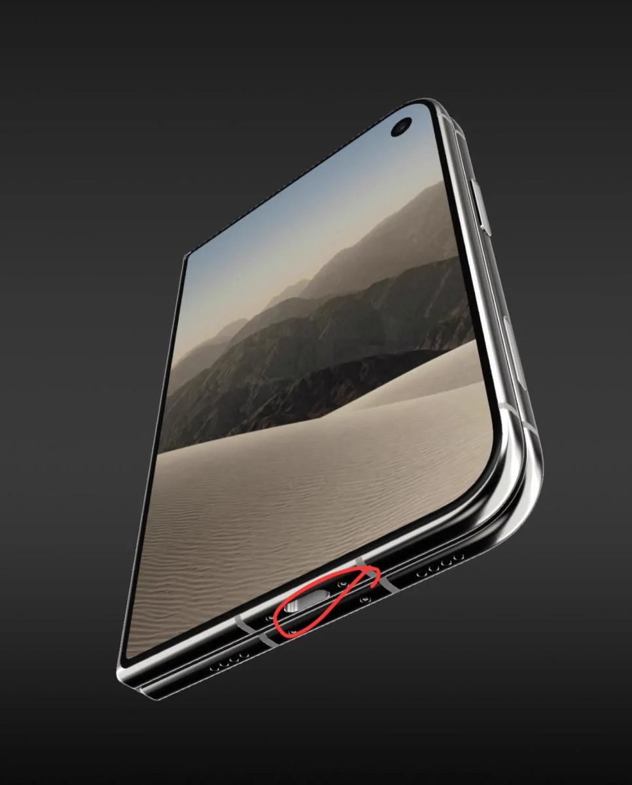

응? 여기 충전단자 있는게 왜 문제인데?
아 ㅅㅂ

응? 여기 충전단자 있는게 왜 문제인데?
아 ㅅㅂ
왼손잡이는 괜찮다는 댓글보고 벙쪘었는데
https://www.dogdrip.net/731091827?comment_srl=731163041#comment_731163041
그분은 디스플레이가 반대로 달려있다고 하네요...
짜릿하고 통쾌했어요! 400만원넘는 폰을 사서 저래야한다는게
케이블: 끼에엑
반대편에 있었어야한다는거?
외부디스플레이가 있는 면을 기준으로 뒷면이 오른쪽, 앞면이 왼쪽으로 가게 됨.
이 상태에서 펼친다는 행동을 했을 때 기준점이 되는건 오른쪽, 뒷면이 되게 됨.
그럼 선은 이 상태에서 최대한 안움직여주는게 더 좋고, 이 외에도 짜잘하다면 더 기술적인 문제들이 많음.
그럼 오른쪽(뒷면)에 충전단자가 가있는 것이 맞게됨.
물론 "틀리다"까진 아니겠지만, 대비로 존나 안좋은건 맞음.
ㅇㅇ 이해함
펼쳤을 때 기준으로 오른쪽에 있어야 하는데 왼쪽에 있어서 사용하는데 불편하다는 말이구나
어허 '감성'
위아래 뒤집어 쓰믄 됨
카메라 때문에 저렇게 설계한듯
애플은 진짜 삼성이 폴더블 8년 짬밥을 똥꾸멍으로 먹은 줄 아나...?
앱 최적화는 넘어가고 듀오는 초기형 치고도 애니메이션 효과 빼고는 너무 못 만든 거 같음.
접었다 폈다 스트레스 테스트 하는거 아닌가?
왤케 정성스럽게 접었다 펴는거같지 ㅋㅋ
돈받은듯 ㅋㅋ
1초에 3번씩접어야지!!!
맥 마우스 충전단자 바닥에 박아놓은새끼가 디자인에 참여한듯
"애플이 하면 다르다"
ㄹㅇ 다르긴 하네 ㅋㅋ
다음버젼에 위치 비꾸어 주면서.
'놀랄만한 혁신적인 위치의 체인지 . 오른쪽 하단으로 단자가 이동하여 충전이 보다 편리하게 되었습니다' 라고 해주기 위한 큰 그림
혹시 현직 에이스이신가요
밑에 냉각 겁나 하겠지? 발열있다더만
하지만 그러면 스피커가 찐빠가 날 수 있는걸
감성 ~ 애플이잖어.
삼성폴더블 욕 뒤지게 했는데 뭐라도 달라야한다 싶어서
노하우 쌩까고 지들이 잘하던 감성(이라 쓰고 불편함) 추가한거지ㅋㅋ
애플은 맘같아선 포트리스 하고 싶었을꺼다 즈그 꿈에 그리던 ㅋㅋㅋㅋㅋ
오른쪽에 두면 특허 침해
저렇게해야 스피커를 스테레오로 들을수있음 얻는게있는만큼 포기한거
근데 리뷰어들은 충전단자 위치 바꾼거 말 안하더라
삼성이 그렇게 만든 이유가 있었네
거대한 아젠다가 어쩌고
선 위치 바꿔버리는거 통쾌하네
잡스형이 살아있었으면 안나왔을 제품인듯
감~성 (애플 톤으로)
무선마우스 충전전 위치때부터 알아봤다
배터리 때문일까? 아니면 기판이 꽉차서? 베이퍼 챔버 때문에? 그것도 아니면 진짜 스테레오 스피커때뮨에?
애초에 가급적 펼쳐사용 하지말으라고 저기다박은거아님?ㅋㅋ
왼손잡이를 위해서 그랬겠지~
왼손잡이랑 뭔상관이냐고,,,
디스플레이 앞에 달려있으면 펼칠때마다자 걸리적 거리는데
충전선 팔아먹기 위한 큰그림
감성 위치임